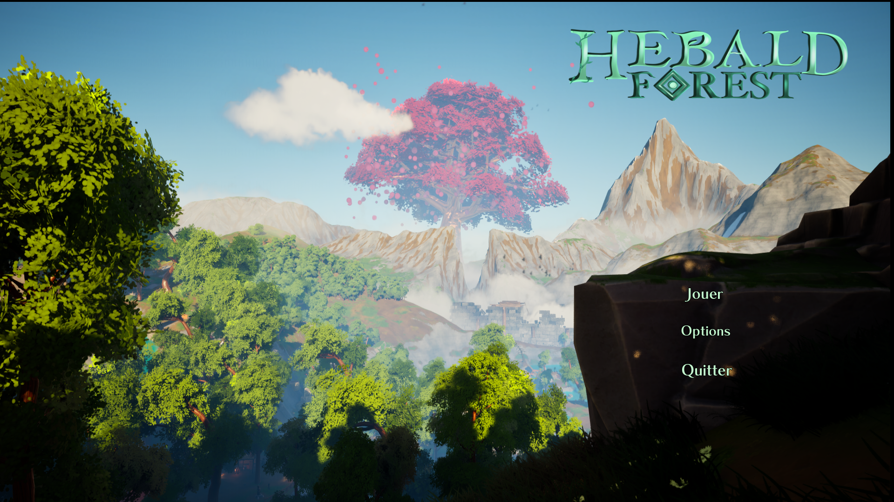
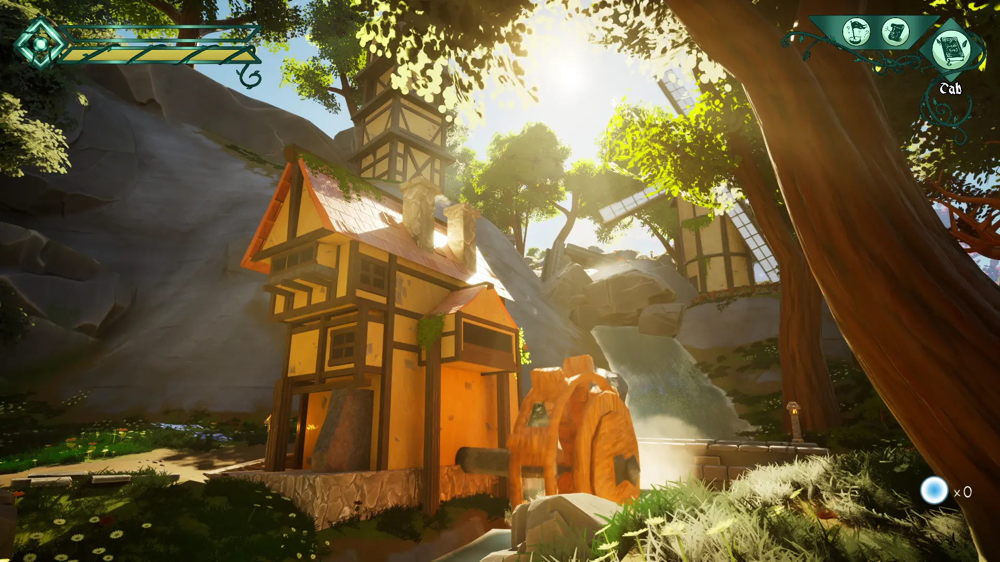
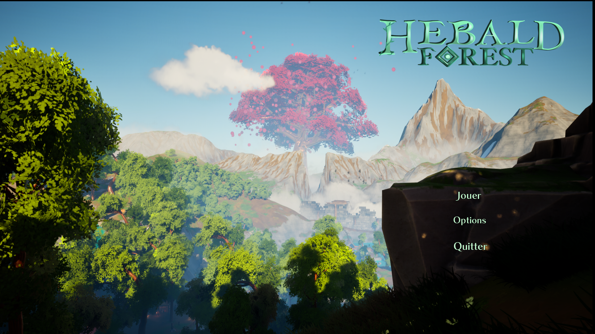
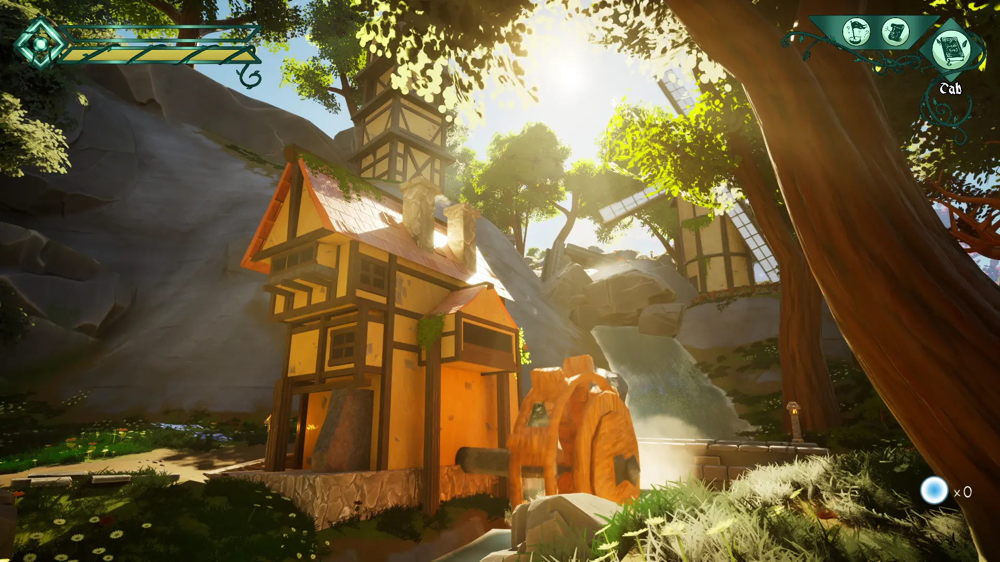

Hebald Forest : The Last Journey
Project introduction
Hebald Forest is a narrative game in which you play as Yuri, a young child living in a small house near a forest. One evening, while rummaging through his late mother's library, Yuri spots a spirit made of light, shaped like a fox, outside the window. Intrigued, he follows the spirit, embarking on an adventure that will lead him to uncover the legend of Hebald. With the help of his mother's notebook, Yuri will learn more about this legend.
My Role
In Hebald Forest, I took on multiple key roles:
Developer : Implemented core mechanics, scripted AI behaviors, and optimized performance for smooth
gameplay.
Game Designer : Designed innovative puzzles and systems that aligned with the game's mysterious tone.
Level Designer : Created atmospheric levels, balancing exploration and tension through environmental
storytelling.
I collaborated with the team to ensure all aspects supported the project's vision and delivered an
immersive player experience.
Gameplay mechanics
Simon Says :
Le joueur doit reproduire une séquence de couleurs pour valider la
séquence. La partie est constituer de 5 séquences générée aléatoirement et recommence de zéro en cas
d'échec d'une séquence.

Simon Says :
Le joueur doit reproduire une séquence de couleurs pour valider la
séquence. La partie est constituer de 5 séquences générée aléatoirement et recommence de zéro en cas
d'échec d'une séquence.
Tools and Technologies
Unreal Engine 5 : Used for the entire game development process, with a focus on
optimizing gameplay performance.
Blueprint : For programming interaction mechanics.
Codecks : Project management tool, used to organize tasks and track progress.
Discord : Team communication to coordinate the technical and creative aspects of the
project.
Github : Version control platform used to manage and collaborate on the project's
codebase, allowing team members to track changes, fix issues, and ensure code stability throughout
development.


 


